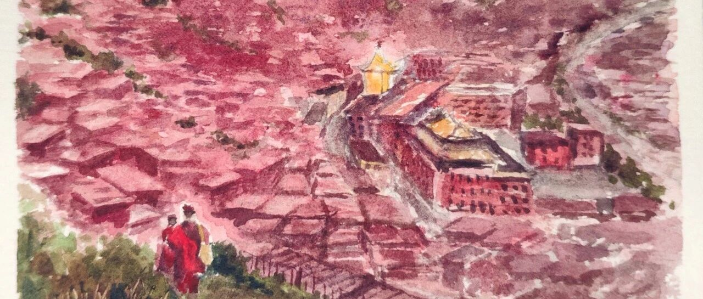

川西之旅Ⅲ——再回色达。
原创
LCX
LCX
PaintingDiary
2023年10月22日 19:01
北京
在小说阅读器中沉浸阅读
五年前毕业旅行曾来过色达，那是第一次经历高反的感觉，也是完完全全被色达佛学院震撼到。
高海拔，就自然会给到达的旅人以额外的精神压力，连快步走都会不舒服的记忆，让我对这佛学院印象太深刻了。我当时觉得，我这辈子可能都不会再来了。谁知居然能再次重逢。
五年之后，不知道是不是因为经历过疫情，也不确定是不是五年后的我对距离感更加敏感，佛学院给我的感觉更加封闭了，距离也仿佛又遥远了一些。
之前可以到达的一些位置，都标明了“游客止步”，游客们只能拥挤在山顶小小的观景台，远距离膜拜佛学院。能理解，因为游客到处乱窜确实会打扰到僧侣们的清修与生活。
不过这些红色的小房子，真的一点都没变。即使上次是春天，这次是秋天，季节也没有改变佛学院的样貌。
跟随山路进入到佛学院之后，当整个佛学院排山倒海的红色到达眼底，时间就静止了。日升日落、飞转的经筒、转塔的脚步都脱离了时间的控制。佛学院的外表是沸腾的喧闹的红色，这红色却是凝固的、寂静无声的。
这一路被问到过好几次“你都来过一次色达了，为什么这次还来”。
其实一开始我确实是因为到过色达，而想要试图改一下行程的，但我自己也在途中渐渐明白，即使目的地曾经来过，因为同行的人不同，自己的年龄、经历也有所改变，所以收获的故事和感受其实大不相同。
目的地，在整个旅行中只占很小的一部分。目的地的美，最终可能都会被遗忘在手机相册里。但是旅途中的“小确幸“和“小不幸”，同行者迥异的性格，路遇的陌生人和他们的故事，会永远记在心里。
就像这次，在中秋之夜到访色达，佛学院的夜景和全年最闪亮的满月一同存入了我的手机相册。
但回想起来，让我印象最深刻的居然是满月出现前那让我们好等的几个小时、等下山末班车等到高反的小伙伴、10点半才吃到的热乎乎的“团圆饭”和心心念念终于在中秋即将过去的几分钟里吃到了的中秋月饼。
好啦，今天先到这，欢迎点赞、转发or给个“在看”~
这个是几年前画的上一次到访色达的水彩，感兴趣的朋友也可以戳下~
Red Buddha.
晚安~下回见！